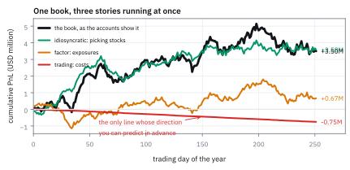
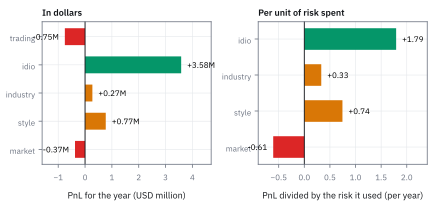
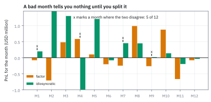
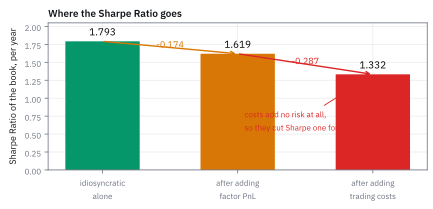

26.6 Performance Attribution: Factor PnL and Idiosyncratic PnL
เงินมาจากไหน และตัวเลขที่ใหญ่ที่สุดมักไม่ใช่ตัวที่สำคัญที่สุด
กองทุนหนึ่งจบปีที่ \$3.50 ล้าน รายงานบอกว่า style ทำเงิน \$771,401 ซึ่งเป็น factor ที่ทำเงินมากที่สุด ควรขยายการเดิมพันบน style ไหม?
เฉลย: ไม่ควรสรุปจากตัวเลขนั้น เพราะ style อธิบายความเหวี่ยงของกองทุนได้แค่ 0.171 คือแทบไม่เกี่ยวกัน ขณะที่ idiosyncratic ทำเงิน \$3.58 ล้าน ซึ่งคือ 102% ของกำไรทั้งปี ส่วนที่น่าสนใจกว่าคือค่าใช้จ่ายในการเทรด −\$752,971 ซึ่งกิน Sharpe Ratio ไป 0.287 จาก 1.619 เหลือ 1.332 นั่นคือตัวเลขที่ควรเอาไปคุยกันก่อน
ศัพท์ที่ใช้ในหัวข้อนี้
- performance attribution
- การไล่ว่ากำไรขาดทุนที่เกิดขึ้นจริงมาจากแหล่งไหนบ้าง ใช้เป็นการตรวจสอบตัวเองหลังจบงวด
- ex ante
- ก่อนเกิดเหตุ คือตอนที่ยังพยากรณ์อยู่ ใช้เรียกความเสี่ยงและผลตอบแทนคาดหวัง
- ex post
- หลังเกิดเหตุ คือตอนที่รู้ผลแล้ว ใช้เรียกทุกอย่างในหัวข้อนี้
- position PnL
- กำไรขาดทุนที่ได้จากการถือสถานะข้ามงวด โดยถือว่าไม่มีการซื้อขายระหว่างงวด ใช้แยกฝีมือถือของออกจากฝีมือเทรด
- trading PnL
- ส่วนที่เหลือหลังหัก position PnL ออกจากกำไรจริง ใช้เก็บทั้งค่าใช้จ่ายในการเทรดและกำไรจากจังหวะเข้าออกภายในงวด
- factor PnL
- กำไรขาดทุนที่มาจากการมี exposure ต่อ factor ใช้ตอบว่าได้เงินเพราะตลาดขยับหรือเพราะเลือกหุ้นถูก
- idiosyncratic PnL
- กำไรขาดทุนที่เหลือหลังหัก factor ออก ใช้เป็นตัววัดฝีมือเลือกหุ้นที่แท้จริง
- epoch
- เวลาที่ถ่ายภาพพอร์ตไว้ เช่นราคาปิดของทุกวัน ใช้เป็นเส้นแบ่งงวดของการไล่บัญชี
- high-frequency trader
- ผู้เทรดที่ปิดสถานะหมดทุกสิ้นวัน ใช้เป็นกรณีสุดขั้วที่ position PnL เป็นศูนย์แต่กำไรไม่เป็นศูนย์
- Information Ratio (IR)
- ผลตอบแทนคาดหวังต่อความผันผวน คิดเฉพาะส่วน idiosyncratic ใช้วัดฝีมือโดยไม่นับโชคจาก factor
- beta
- ความชันของ PnL ก้อนหนึ่งเทียบกับ PnL ทั้งกอง ใช้บอกว่าก้อนนั้นขับความเหวี่ยงของกองทุนแค่ไหน
- skill
- ความสามารถที่ทำซ้ำได้ ต่างจากผลลัพธ์ที่ดีครั้งเดียว ใช้เป็นสิ่งที่การไล่บัญชีพยายามแยกออกมา
- luck
- ผลลัพธ์ที่มาจากความบังเอิญ ใช้เป็นสิ่งที่ต้องหักออกก่อนตัดสินใจจ่ายโบนัสหรือเพิ่มทุน
สัญลักษณ์ที่ใช้ในหัวข้อนี้
| สัญลักษณ์ | ความหมาย | หน่วย |
|---|---|---|
| $\mathbf w_t$ | สถานะที่ถืออยู่ ณ ต้นงวด t | USD |
| $\mathbf r_t$ | ผลตอบแทนของหุ้นทุกตัวในงวด t | decimal |
| $\mathbf b_t$ | factor exposure ณ ต้นงวด t เท่ากับ $\mathbf B^{\mathsf T}\mathbf w_t$ | USD |
| $\mathbf f_t$ | factor return ในงวด t | decimal |
| $\boldsymbol\epsilon_t$ | idiosyncratic return ในงวด t | decimal |
| $\text{PnL}_t$ | กำไรขาดทุนจริงที่บัญชีบันทึกในงวด t | USD |
| $T$ | จำนวนงวดในหนึ่งปี | วันทำการ |
| $m$ | จำนวน factor | จำนวน |
| $v$ | ความผันผวนของ PnL | USD ต่อวัน |
ที่มาที่ไป: ใบเดียวที่บอกว่าปีที่แล้วเกิดอะไรขึ้น
Richard Feynman เคยบอกไว้ในสุนทรพจน์ปี 1974 ว่าหลักข้อแรกคือห้ามหลอกตัวเอง และตัวเองคือคนที่หลอกง่ายที่สุด ประโยคนั้นจริงกับนักวิทยาศาสตร์และจริงกับคนเทรดเท่ากัน
การไล่บัญชีย้อนหลังคือเครื่องมือที่ทำให้หลอกตัวเองยากขึ้น ถ้าปีที่แล้วได้เงิน มันบอกว่าได้เพราะอะไร ถ้าเสีย มันบอกว่าเสียตรงไหนและซ่อมได้ไหม และบ่อยครั้งคำตอบคือ “ได้เงินจากการเดิมพันที่ไม่ได้ตั้งใจจะเดิมพัน” ซึ่งเป็นข่าวร้ายที่ปลอมตัวมาเป็นข่าวดี
บทนี้มีทุกชิ้นส่วนที่ต้องใช้แล้ว หัวข้อนี้แค่ประกอบมันเข้าด้วยกันเป็นรายงานหนึ่งใบ
โจทย์: หนึ่งปีของกองทุน market-neutral
โจทย์ให้อะไรมาบ้าง กองทุนหนึ่งเดิน 251 วันทำการ แบบจำลองความเสี่ยงมีสามกลุ่ม factor คือ market style industry และมี idiosyncratic ข้อมูลที่มีคือสถานะทุกวัน ผลตอบแทนของหุ้นทุกวัน และกำไรขาดทุนจริงที่บัญชีบันทึก
ข้อมูลจำลองด้วย seed 153 เพื่อให้รันซ้ำได้ ความผันผวนรายวันของ PnL จากแต่ละกลุ่มคือ \$40,000 \$70,000 \$50,000 และ \$120,000 โดย style กับ idiosyncratic เป็นสองกลุ่มที่คาดว่าจะทำเงิน ส่วนค่าใช้จ่ายในการเทรดสุ่มจาก distribution ที่เป็นบวกเสมอ
ต้องหาห้าอย่าง การแยกกำไรเป็นสามก้อน ตัวเลขทั้งปีของแต่ละก้อน Sharpe Ratio ของแต่ละก้อน ราคาที่จ่ายให้ค่าเทรด และคำตอบว่าควรขยาย style หรือไม่
ขั้นที่ 1 — แยกกำไรเป็นสามก้อน
นี่คือนิยามของการแยก ไม่ใช่ผลที่พิสูจน์ บวกและลบสิ่งเดียวกันเข้าไป คือกำไรที่จะได้ถ้าถือสถานะต้นงวดนิ่ง ๆ ตลอดงวด แล้วจัดกลุ่มใหม่ ก้อนที่เหลือคือทุกอย่างที่การซื้อขายระหว่างงวดทำให้ต่างไป
ก้อนกลางกับก้อนขวารวมกันเรียกว่า position PnL คือกำไรที่จะได้ถ้าเทรดได้ทันทีโดยไม่มีค่าใช้จ่าย ส่วนก้อนซ้ายเก็บความจริงทั้งหมด ทั้งค่าคอมมิชชั่น ทั้ง spread ทั้งผลกระทบต่อราคา และทั้งกำไรจากจังหวะเข้าออกภายในวัน
วิธีที่ดีที่สุดในการเข้าใจก้อนซ้ายคือดูกรณีสุดขั้ว high-frequency trader ที่ปิดสถานะหมดทุกสิ้นวัน สถานะต้นงวดกับปลายงวดเป็นศูนย์ position PnL จึงเป็นศูนย์ทั้งหมด แต่กำไรจริงของเขาไม่ใช่ศูนย์ ทุกบาททุกสตางค์ของเขาอยู่ในก้อนซ้าย
สำหรับกองทุนที่ถือข้ามคืน ก้อนซ้ายมักติดลบ เพราะค่าใช้จ่ายมากกว่ากำไรจากจังหวะ และนั่นคือสิ่งที่จะเห็นในโจทย์นี้
ขั้นที่ 2 — ตารางเดียว สองวิธีบวก
factor PnL เป็นตารางที่มี T แถวและ m คอลัมน์ ทุกช่องคือ exposure คูณ factor return ของวันนั้น บวกตามแถวก่อนได้รายวัน บวกตามคอลัมน์ก่อนได้รายตัว ผลรวมสุดท้ายเท่ากันเพราะเป็นตารางเดียวกัน
ฟังดูเป็นเรื่องเล็ก แต่มันคือสิ่งที่ทำให้รายงานสองแบบอยู่ร่วมกันได้ ผู้จัดการกองทุนอยากเห็นรายวันเพื่อดูว่าวันไหนเจ็บ ส่วนนักวิจัยอยากเห็นรายตัวเพื่อดูว่า factor ไหนเป็นปัญหา ทั้งสองอ่านตารางเดียวกัน แค่คนละทิศ
และจัดกลุ่มได้อีก รวม style ทุกตัวเป็นกลุ่มเดียว รวม industry ทุกตัวเป็นอีกกลุ่ม แล้วรายงานสี่บรรทัดแทนที่จะเป็นร้อยบรรทัด ซึ่งเป็นสิ่งที่หัวข้อ 26.4 ทำกับความเสี่ยง
ขั้นที่ 3 — ตัวเลขของปีนี้
รันการแยกบนข้อมูลของโจทย์แล้วอ่านผล ทุกตัวเลขเป็นดอลลาร์ตลอดปี 251 วัน
ภาพที่ได้ชัดมาก idiosyncratic ทำเงิน \$3.58 ล้าน ซึ่งคือ 102.4% ของกำไรทั้งปี แปลว่าถ้าไม่มี factor และไม่มีค่าเทรดเลย กองทุนนี้จะได้มากกว่าที่ได้จริง
factor รวมได้ \$670,303 ซึ่งดูดี แต่ประกอบด้วย market ที่เสีย \$374,242 กับสองตัวที่ได้ ตัวที่เสียคือตัวที่ไม่ควรมี exposure อยู่แล้ว การเห็นตัวเลขนี้แปลว่า hedge ยังไม่แน่นพอ
ตรวจเองใน 10 วินาที สามบรรทัดบนต้องรวมกันได้บรรทัด factor รวม −374,242 + 771,401 + 273,143 = 670,302 ต่างจาก 670,303 อยู่หนึ่งดอลลาร์จากการปัดเศษ และ 670,303 + 3,582,314 = 4,252,617 ซึ่งคือ position PnL
Figure 26.6a — กำไรสะสมทั้งปี แยกเป็นสามเส้นทาง

เส้นหนาคือกำไรสะสมของกองทุนตามบัญชี เส้นที่ไต่ขึ้นสูงสุดคือ idiosyncratic ซึ่งทำงานเกือบทั้งหมด เส้นที่แทบราบคือ factor รวม และเส้นที่ลาดลงตลอดปีคือค่าใช้จ่ายในการเทรด ซึ่งเป็นเส้นเดียวที่คาดเดาได้ว่าจะไปทางไหน
แล้วเอาไปใช้ทำอะไรได้จริงบ้าง
ตัวเลขดอลลาร์ยังไม่พอ กำไร \$771,401 จาก style อาจมาจากการเดิมพันก้อนใหญ่ที่บังเอิญถูก หรือจากการเดิมพันก้อนเล็กที่ถูกบ่อย สองอย่างนี้ต่างกันมาก และตัวที่แยกได้คือความเสี่ยงที่จ่ายไปเพื่อให้ได้กำไรนั้น
บนโต๊ะจริง ทุกบรรทัดของรายงานต้องมีสามคอลัมน์ กำไรเป็นดอลลาร์ ความผันผวนที่ใช้ไป และผลหารของสองอันนั้น คอลัมน์ที่สามคือคอลัมน์ที่ใช้ตัดสินใจ
ขั้นที่ 4 — หารด้วยความเสี่ยงที่จ่ายไป
เอากำไรของแต่ละก้อนมาหารด้วยความผันผวนของมันเอง แล้วคูณรากที่สองของ 251 เพื่อทำให้เป็นรายปี ตัวเลขที่ได้เทียบกันได้ข้ามก้อน ต่างจากตัวเลขดอลลาร์
ตัวเลข 0.287 คือข้อค้นพบที่สำคัญที่สุดของรายงานใบนี้ ค่าใช้จ่ายในการเทรดกิน Sharpe Ratio ไป 18% ของ 1.619 โดยที่มันไม่ได้เพิ่มความเสี่ยงเลย ความผันผวนขยับจาก \$165,759 เป็น \$165,810 คือแทบไม่ขยับ มันแค่ตัดกำไรออกไปตรง ๆ
นั่นทำให้มันเป็นเป้าที่ดีที่สุดสำหรับการปรับปรุง ถ้าลดค่าเทรดลงครึ่งหนึ่ง Sharpe Ratio ขึ้นราว 0.14 ซึ่งยากกว่าการหา alpha ใหม่ที่ให้ผลเท่ากันมากหรือไม่ เป็นคำถามที่บทที่ 31 ทั้งบทตอบ
อีกข้อ Sharpe Ratio ของ idiosyncratic ที่ 1.793 สูงกว่าของทั้งกองที่ 1.332 แปลว่าทุกอย่างที่ไม่ใช่ idiosyncratic กำลังฉุดกองทุนลง ทั้ง factor ที่ให้ Sharpe Ratio แค่ 0.414 และค่าเทรดที่ให้ค่าติดลบ
Figure 26.6b — ดอลลาร์กับ Sharpe Ratio จัดอันดับไม่เหมือนกัน

แผงซ้ายคือกำไรทั้งปีเป็นดอลลาร์ แผงขวาคือกำไรนั้นหารด้วยความผันผวนที่ใช้ไป แท่งของ style ดูใหญ่ในแผงซ้ายแต่หดลงมากในแผงขวา ส่วนแท่งของ market ติดลบทั้งสองแผง ซึ่งเป็นสัญญาณว่า hedge ยังไม่แน่นพอ
ขั้นที่ 5 — ตอบคำถามที่ตั้งไว้: ควรขยาย style ไหม
ใช้เกณฑ์จากหัวข้อ 26.4 กลุ่มหนึ่งควรโตก็ต่อเมื่อ Sharpe Ratio ของมันเทียบกับของทั้งกอง มากกว่าค่าที่มันแพง ซึ่งวัดด้วย beta ของ PnL กลุ่มนั้นเทียบกับ PnL ทั้งกอง
คำตอบคือยังตอบไม่ได้จากปีเดียว และนั่นคือคำตอบที่ถูกต้อง กำไร \$771,401 ในหนึ่งปีบนความผันผวนรายวัน \$70,000 แปลว่า Sharpe Ratio ที่วัดได้คือราว 0.70 ซึ่งมีความคลาดเคลื่อนราว ±0.63 ตามสูตรในหัวข้อ 14.5 ช่วงนั้นคร่อมศูนย์
ส่วน beta ที่ 0.171 บอกอีกเรื่อง ต่อให้ style ทำเงินจริง มันก็ไม่ได้ขับกองทุนนี้ การขยายมันสองเท่าจะเพิ่มกำไรคาดหวังไม่มากเมื่อเทียบกับความเสี่ยงที่กระจายไม่ได้ที่เพิ่มเข้ามา
สิ่งที่ควรทำแทนคือสองอย่างที่ตัวเลขชี้ชัด ลดค่าเทรดซึ่งกิน 0.287 ของ Sharpe Ratio และปิด exposure ต่อ market ที่เสีย \$374,242 ทั้งปีโดยไม่มีเหตุผลให้ถือ
Figure 26.6c — factor กับ idiosyncratic ไปคนละทางครึ่งหนึ่งของเดือน

แท่งรายเดือนของกำไรจาก factor เทียบกับจาก idiosyncratic ห้าเดือนจากสิบสองเดือนที่สองก้อนนี้ไปคนละทิศ ถ้าดูแต่ตัวเลขรวมของแต่ละเดือน จะไม่มีทางรู้เลยว่าเดือนที่แย่นั้นแย่เพราะเลือกหุ้นผิด หรือเพราะ factor ไม่เข้าข้าง
Figure 26.6d — Sharpe Ratio ของแต่ละก้อน และที่มันหายไป

เริ่มจาก idiosyncratic ที่ 1.793 การเติม factor เข้ามาลดเหลือ 1.619 เพราะ factor มี Sharpe Ratio แค่ 0.414 และการเติมค่าเทรดลดต่อเหลือ 1.332 ทั้งสองขั้นลดลง และขั้นที่สองลดมากกว่าโดยไม่ได้เพิ่มความเสี่ยงอะไรเลย
กับดัก: อ่านตัวเลขดอลลาร์เป็นฝีมือ และลืมว่าทุกตัวเลขมีความคลาดเคลื่อน
กับดักแรกคืออ่านบรรทัดที่ตัวเลขใหญ่ที่สุดแล้วสรุปว่านั่นคือจุดแข็ง ในโจทย์นี้ style ทำเงินมากที่สุดในบรรดา factor แต่ Sharpe Ratio ของมันแค่ 0.70 และ beta ต่อกองทุนแค่ 0.171 การเพิ่มการเดิมพันบนมันคือการเพิ่มความเสี่ยงที่กระจายไม่ได้ เพื่อกำไรที่พิสูจน์ไม่ได้ว่ามีจริง
กับดักที่สองคือลืมว่าการแยกนี้ขึ้นกับแบบจำลองที่ใช้ หัวข้อ 26.3 พิสูจน์แล้วว่าการหมุนแบบจำลองย้าย PnL ระหว่าง factor ได้โดยที่โลกจริงไม่เปลี่ยน ตัวเลขรวมของ factor กับของ idiosyncratic นิ่ง แต่การแบ่งภายใน factor ไม่นิ่ง อย่าเปลี่ยนแบบจำลองกลางปีแล้วเทียบข้ามช่วง
กับดักที่สามคือรายงานตัวเลขโดยไม่บอกความคลาดเคลื่อน ค่า factor return ที่ใช้คำนวณ PnL เป็นค่าที่ประมาณมา ไม่ใช่ค่าจริง มันจึงมีความคลาดเคลื่อนติดมาด้วย และผลคือ factor PnL กับ idiosyncratic PnL มีความสัมพันธ์เป็นลบเสมอ ความผิดที่เข้าก้อนหนึ่งจะหายไปจากอีกก้อนพอดี หัวข้อ 32.4 จะกลับมาเรื่องนี้พร้อมวิธีคำนวณความคลาดเคลื่อนนั้น
ข้อจำกัด: รายงานใบนี้บอกอะไร และไม่บอกอะไร
| บรรทัด | บอกอะไร | ไม่บอกอะไร | ทำอะไรต่อ |
|---|---|---|---|
| trading PnL | ค่าใช้จ่ายและกำไรจากจังหวะ รวมกันเป็นก้อนเดียว | ไม่แยกว่าส่วนไหนเป็น spread ส่วนไหนเป็นผลกระทบต่อราคา | ต้องแยกด้วยข้อมูลการซื้อขายจริง ซึ่งเป็นเรื่องของบทที่ 31 |
| factor PnL รายตัว | exposure ไหนเข้าข้างหรือไม่เข้าข้างปีนี้ | ไม่บอกว่าตั้งใจถือหรือเผลอถือ | เทียบกับขีดจำกัดที่ตั้งไว้ ถ้าไม่เคยตั้ง ให้ตั้ง |
| idiosyncratic PnL | ฝีมือเลือกหุ้นในภาพรวม | ไม่บอกว่าเก่งเพราะเลือกข้างถูกหรือเพราะลงขนาดถูก | แยกต่อด้วยวิธีในหัวข้อ 32.5 |
| ทุกบรรทัด | ค่าที่วัดได้ในหนึ่งปี | ไม่บอกว่าจะเกิดซ้ำไหม | ต้องดูความคลาดเคลื่อน และรอข้อมูลหลายปี |
แถวสุดท้ายคือข้อจำกัดที่ครอบทุกอย่าง หัวข้อ 25.4 พิสูจน์แล้วว่ากลยุทธ์ที่ Sharpe Ratio 1.33 ต้องรัน 2.3 ปีกว่าจะได้ t เท่ากับ 2 รายงานปีเดียวจึงเป็นจุดเริ่มต้นของการสนทนา ไม่ใช่ข้อสรุป
สร้างข้อมูลและตรวจทุกตัวเลขของหัวข้อนี้
import numpy as np
T = 251
fac_vol = np.array([40_000.0, 70_000.0, 50_000.0]) # market, style, industry
idio_vol = 120_000.0
C = np.array([[1, .25, .45], [.25, 1, -.15], [.45, -.15, 1]])
rng = np.random.default_rng(153)
fp = (np.linalg.cholesky(C) @ rng.standard_normal((3, T))) * fac_vol[:, None]
fp[1] += 0.8 / np.sqrt(251) * 70_000 # style is a paid bet
ip = rng.standard_normal(T) * idio_vol + 1.6 / np.sqrt(251) * idio_vol
trade = -rng.gamma(2.0, 1500.0, T) # costs, always negative
pos = fp.sum(axis=0) + ip
book = pos + trade
# step 3: the year, line by line
assert abs(fp[0].sum() - (-374_242)) < 1
assert abs(fp[1].sum() - 771_401) < 1
assert abs(fp[2].sum() - 273_143) < 1
assert abs(fp.sum() - 670_303) < 1
assert abs(ip.sum() - 3_582_314) < 1
assert abs(pos.sum() - 4_252_616) < 1
assert abs(trade.sum() - (-752_971)) < 1
assert abs(book.sum() - 3_499_645) < 1
assert abs(fp.sum() + ip.sum() - pos.sum()) < 1e-6 # the pieces really do add up
assert abs(pos.sum() + trade.sum() - book.sum()) < 1e-6
assert abs(ip.sum() / book.sum() - 1.024) < 1e-3 # idio is 102% of the book
# step 2: the grid sums the same either way
by_day = sum(fp[:, t].sum() for t in range(T))
by_factor = sum(fp[j].sum() for j in range(3))
assert abs(by_day - by_factor) < 1e-6
# step 4: divide by the risk each piece used
ann = lambda x: x.mean() / x.std() * np.sqrt(251)
assert abs(ip.std() - 126_117) < 1 and abs(ann(ip) - 1.793) < 5e-3
assert abs(fp.sum(axis=0).std() - 102_219) < 1 and abs(ann(fp.sum(axis=0)) - 0.414) < 5e-3
assert abs(pos.std() - 165_759) < 1 and abs(ann(pos) - 1.619) < 5e-3
assert abs(book.std() - 165_810) < 1 and abs(ann(book) - 1.332) < 5e-3
assert abs(ann(pos) - ann(book) - 0.287) < 5e-3 # what trading costs in Sharpe
assert abs(book.std() / pos.std() - 1) < 1e-3 # costs add no risk at all
assert ann(ip) > ann(pos) > ann(book) # everything else drags
# step 5: big PnL is not the same as driving the book
beta = np.cov(fp[1], book)[0, 1] / book.var()
assert abs(beta - 0.171) < 5e-3
assert abs(fp[1].sum() / book.sum() - 0.220) < 5e-3 # 22% of the money
assert abs(ann(fp[1]) - 0.70) < 0.03 # but a Sharpe of only 0.70
se = np.sqrt((1 + ann(fp[1]) ** 2 / 2) / 251) * np.sqrt(251)
assert abs(se - 0.63) < 0.02 and ann(fp[1]) - 2 * se < 0 # the interval straddles zero
# the monthly picture in the figure
mf = fp.sum(axis=0)[:240].reshape(12, 20).sum(axis=1)
mi = ip[:240].reshape(12, 20).sum(axis=1)
assert int(np.sum(np.sign(mf) != np.sign(mi))) == 5 # 5 of 12 months disagreeบรรทัดที่เทียบ book.std กับ pos.std ยืนยันข้อสังเกตสำคัญ ค่าใช้จ่ายในการเทรดตัดกำไรออกโดยไม่เพิ่มความเสี่ยงเลย มันจึงกิน Sharpe Ratio เต็ม ๆ และเป็นเป้าที่คุ้มที่สุดในการปรับปรุง
ก่อนไปต่อ — จบบทที่ 26
บทนี้ใช้ factor model ราวกับว่ามันตกลงมาจากฟ้า ทั้ง loading ทั้ง factor return ทั้ง covariance matrix มีให้พร้อม แต่ในความเป็นจริงต้องสร้างมันขึ้นมาเองจากข้อมูลดิบ และนั่นคืองานที่ยากกว่าทุกอย่างในบทนี้รวมกัน
บทที่ 27 เริ่มจากศูนย์ ข้อมูลผลตอบแทนกับคุณสมบัติของบริษัท แล้วสร้างแบบจำลองความเสี่ยงที่ใช้งานได้จริงขึ้นมาทีละขั้น พร้อมวิธีทดสอบว่ามันดีจริงหรือแค่ดูดี
สรุปที่ใช้ได้จริง
- กำไรแยกได้เป็นสามก้อน trading PnL คือสิ่งที่การซื้อขายทำให้ต่างจากการถือนิ่ง ๆ ส่วน position PnL แยกต่อเป็น factor กับ idiosyncratic ก้อนแรกคือทั้งหมดของ high-frequency trader ที่ปิดสถานะทุกวัน
- factor PnL เป็นตารางที่บวกได้สองทิศ บวกตามวันได้รายวัน บวกตามคอลัมน์ได้รายตัว ผลรวมเท่ากันเสมอ นั่นทำให้รายงานหลายมุมอยู่ร่วมกันได้
- ในปีตัวอย่าง idiosyncratic ทำ \$3.58 ล้านซึ่งคือ 102% ของกำไรทั้งปี factor รวมทำ \$670,303 โดยที่ market เสีย \$374,242 และค่าเทรดเสีย \$752,971
- ค่าเทรดกิน Sharpe Ratio ไป 0.287 จาก 1.619 เหลือ 1.332 โดยไม่เพิ่มความเสี่ยงเลย ความผันผวนขยับแค่จาก \$165,759 เป็น \$165,810 มันจึงเป็นเป้าที่คุ้มที่สุดในการปรับปรุง
- ตัวเลขดอลลาร์ที่ใหญ่ที่สุดไม่ใช่เรื่องที่สำคัญที่สุด style ทำเงิน 22% ของทั้งปีแต่มี Sharpe Ratio แค่ 0.70 ซึ่งช่วงความคลาดเคลื่อนคร่อมศูนย์ และมี beta ต่อกองทุนแค่ 0.171